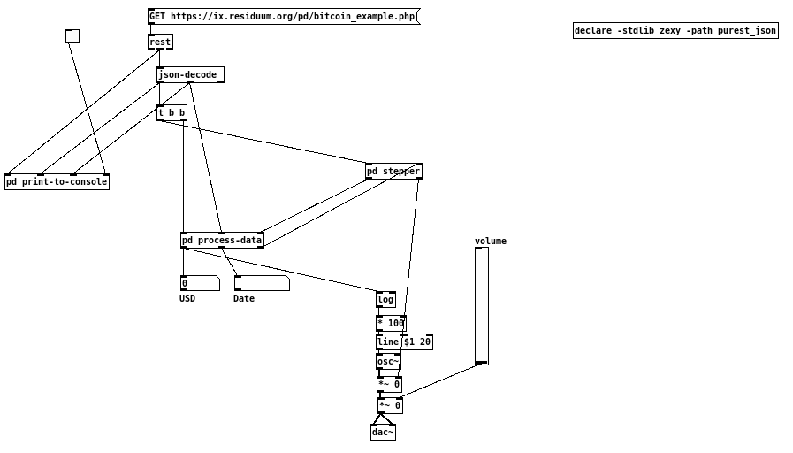
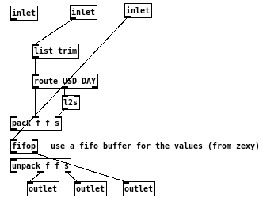
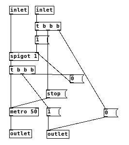

This tutorial will show you, how you can get data from a simple RESTful webservice and generate sound from it.
In the examples folder, you can find the patch the-sound-of-money.pd. You will only need to fill in your credentials, that you will get with the patch itself.
In this tutorial, I will use the following notation:
[my object]: an object with the name "my-object".
[my own message(: a message with the content "my own message".
Getting the Data
This example gets the daily trading prices of Bitcoin starting from September 2011. This is made with Scraperwiki, an online service that lets you scrape webpages or download data on regular intervals. In that case, it calls the API of http://bitcoincharts.com/ once a day for weighted Bitcoin prices in the last 24 hours in Euro and US Dollar.
Data is stored in an SQLite database, and Scraperwiki offers a JSON API for querying the database.

The query in this example:
select
strftime('%Y-%m-%d',
datetime(DATE, 'unixepoch')) as DAY,
cast(USD as real) as USD,
cast(EUR as real) as EUR
from swdata
order by DATE
After designing the data online, we query the webservice with a GET request using [rest].
The data then looks something like this:
[
{"DAY": "2011-09-30", "USD": 4.8743, "EUR": 3.7406},
{"DAY": "2011-10-01", "USD": 5.0825, "EUR": 3.8489},
{"DAY": "2011-10-03", "USD": 4.985, "EUR": 3.8434},
{"DAY": "2011-10-04", "USD": 4.9573, "EUR": 3.7857}
]
When the data is received, the returned value is fed into [json-decode]. As the symbol atom from [rest] will be a JSON array, we will get messages for each JSON object on the left outlet followed by a bang on the right outlet.
A sequence of messages for an object looks like this:
list DAY 2012-01-05
list USD 5.39
list EUR 4.06
Processing the Data
This section discusses the operations in the subpatch [pd process-data].

In this subpatch, the incoming lists from [json-decode] are taken and packed into one list for each JSON object in the array.
First, we remove the list prefix from each message, then pack those messages, and use the bang message from the right outlet of [json-decode] that is emitted after each decoded array member to trigger the output of [pack]. The transformed message for each JSON object then looks like:
0 4.8743 2011-09-30
Each output from put starts with a 0, as we only use the bang on the first inlet of [pack] to trigger the output. We also discard Euro rates and only care for US Dollar.
We then use [fifop] from zexy to store the values. This is FIFO buffer, that advances on bang.
After the data is output from [fifop], the list is unpacked and connected to seperate outlets. Note: We discard the leading 0.
Stepping through each values
This section discusses the operations in the subpatch [pd stepper].

This subpatch starts a [metro] after all data is stored in the [fifop] inside [pd process-data]. When [fifop] is done, the bang from the right outlet of it is used to stop the [metro].
Generating sound
Sound generation is the bottom part of the main patch.
The exchange rate for Bitcoins vary widely, with values ranging from ca. 3 US$/Bitcoin to ca. 800 US$/Bitcoin. To make any sense of the exchange rates, and especially to get some short term variation in pitch change, scaling the data logarithmically makes sense.
Different data might benefit from other scaling methods, linear or exponential.